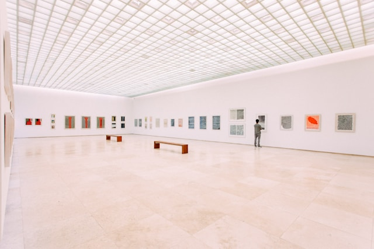

Ιστορική Αναδρομή Ρευμάτων
Η ιστορία της τέχνης είναι μια διαρκής αναζήτηση νέων τρόπων έκφρασης και θέασης του κόσμου. Από το πάθος του Ρομαντισμού έως την εκρηκτική ελευθερία του Φωβισμού, κάθε κίνημα γεννήθηκε ως απάντηση στις κοινωνικές αλλαγές και την ανάγκη των καλλιτεχνών να αποτυπώσουν την υποκειμενική τους αλήθεια. Εξερευνήστε παρακάτω τους σημαντικότερους σταθμούς που διαμόρφωσαν τη σύγχρονη εικαστική αντίληψη:

Πατήστε πάνω σε κάθε ρεύμα για να δείτε αναλυτικές πληροφορίες και αντιπροσωπευτικά έργα:
-
19ος Αιώνας
-
20ος Αιώνας